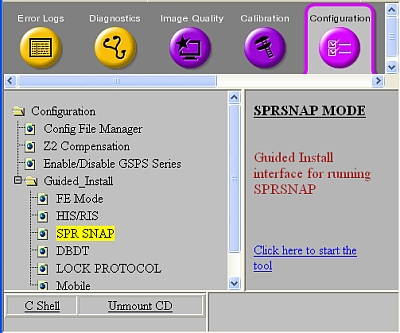
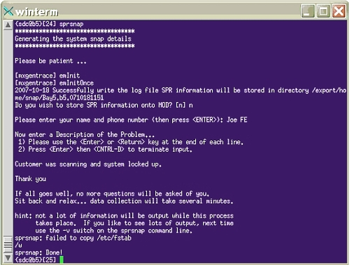

Operating Documentation
Direction 5670000, Rev# 1
Module Version 4.0, Version Date 11/17/08
Operating Documentation |
The SprSnap tool creates a new directory: /export/home/snap/site, where site identifies the site name and date and time information. For example, /export/home/snap/Bay5.b15.0710181151, where the SprSnap was performed on the b15 computer on October 18, 2007 at 11:51.
Open the Common Service Desktop, and under the Configuration tab, expand Guided Install and select SPR SNAP. Click the Click here to start the tool link.
Illustration 1: Guided Install SPR SNAP

When the SprSnap dialog window displays (see Illustration 2), fill in the required information:
When the SprSnap directory done message displays, make a note of the directory and click [OK].
Open a C Shell terminal and type sprsnap at the command line.
Enter the required information, including your name, phone number and description of the problem.
Illustration 3: SprSnap C Shell Dialog Window

When the SprSnap done message displays, type ls -al to view and make a note of the new directory (Illustration 4).
Log in to the host computer as root.
From a C Shell terminal, locate the directory you want to delete in /export/home/snap/site.
Type ls to view the files.
Type rm -r -f directory, where directory is the name of your sprsnap site.